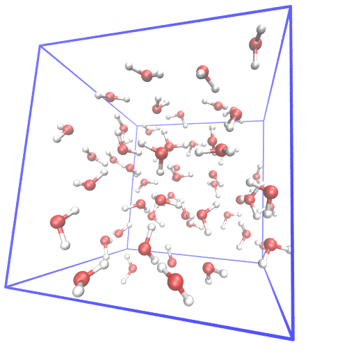

Example of setting up first principle molecular dynamics (FPMD) simulation from scratch.
In FPMD simulations for liquids, usually, a classical MD simulation is needed to equilibrate the system. I gave examples of using gromacs and lammps as classical MD simulator and cpmd, cp2k, cp.x, qbox as FPMD simulator. The system of 55 water at room temperature is used as the example.
From scratch means I generate the initial structure from the water molecular structure.
In this post, 3 steps are listed.
1. generating initial structure
2. equilibrate the system by classical MD ( 2.1 gromacs code, 2.2 lammps code )
3. running a short FPMD simulation ( 3.1 cpmd code 3.2 cp2k code 3.3 cp.x code 3.4 qbox code )
softwares used: VMD packmol gromacs lammps cpmd cp2k cp.x quantum-espresso qbox
0 download the files
All the files needed are included here.
1.1 generate initial structure for gromacs
Note: in gromacs, genbox command can be used to generate a water box. Here I use packmol to generate the input structure and convert it to gro file as input.
The water structure is as follow (water.xyz):
3
OW 0.0 0.0 0.0
HW1 -0.81649 0.57736 0.0
HW2 0.81649 0.57736 0.0
a packmol input (water55_packmol.in) script is used here to generate the structure of the total system.
tolerance 2.0
filetype xyz
output water55.xyz
structure water.xyz
number 55
inside box 0. 0. 0. 10.8172 10.8172 10.8172
end structure
And also I have a python script for the convertion from xyz to gro file (convert_xyz_to_gro.py), the class mdsystem.py can be download here.
from mdsystem import *
f = file("water55.xyz")
s = mdsystem(cell = [11.8172, 11.8172, 11.8172])
s.xyzinput(f)
s.generate_bonds(cutoff = 1.2)
s.molecular_detection()
for i in range(len(s.moleculars)):
s.molecular_names.append("SOL")
print s.grooutput()
python convert_xyz_to_gro.py > water55.gro
I use this structure for the input of classical molecular dynamics simulation in gromacs.
1.2 generate initial structure for lammps
The water structure is as follow (water.xyz):
3
O 0.0 0.0 0.0
H -0.81649 0.57736 0.0
H 0.81649 0.57736 0.0
a packmol input (water55_packmol.in) script is used here to generate the structure of the total system.
tolerance 2.0
filetype xyz
output water55.xyz
structure water.xyz
number 55
inside box 0. 0. 0. 10.8172 10.8172 10.8172
end structure
And also I have a vmd script for the generation of psf and pdb and lammps data file.
mol new water55.xyz
pbc set { 11.8172 11.8172 11.8172 }
topo clearbonds
for {set i 0} {$i < 55} {incr i} {
topo addbond [expr $i*3] [expr $i*3+1]
topo addbond [expr $i*3] [expr $i*3+2]
topo addangle [expr $i*3+1] [expr $i*3] [expr $i*3+2]
}
animate write psf water55.psf
animate write pdb water55.pdb
topo writelammpsdata water55.data
I use this structure for the input of classical molecular dynamics simulation in lammps.
2.1 gromacs code
for gromacs simulation, there is separate forcefield file and topology file ( spcfw.itp and water55.top ).
two mdp input files needed ( min.mdp nvt.mdp ), the first one is used to minimize the structure, the second one is used for the simulation. Here is the command I use for the simulation.
gmx grompp -f min.mdp -c water55.gro -p water55.top -o min.tpr
gmx mdrun -s min.tpr -c em.gro
gmx grompp -f nvt.mdp -c em.gro -p water55.top -o nvt.tpr
gmx mdrun -s nvt.tpr
In the example, I run 100ps for equlibrating the system. In real simulation, longer is usually needed.
I also like to convert the trajectory so that the atom in the same molecule are not separate in the edge of the box.
gmx trjconv -s nvt.tpr -f traj_comp.xtc -o traj_comp_whole.xtc -pbc whole <<< "0"
Then, the script ( take_last_snapshot.vmd ) can be used to take the last snapshot of the simulation as the initial structure for FPMD.
mol new water55.psf
mol addfile traj_comp_whole.xtc waitfor all
pbc wrap -all -compound residue
set nframes [molinfo top get numframes]
set nframes [expr $nframes - 1]
animate write xyz eq.xyz beg $nframes
exit
2.2 lammps code
Here we use the generated initial structure to run molecular dynamics with lammps. SPC/Fw force field is used.
Here is the ( in.spcf ) lammps input script
units real
dimension 3
boundary p p p
atom_style full
read_data water55.data
## alternate way to set charges - besides manually in data file ###
group ox type 2
group hy type 1
set group ox charge -0.8200
set group hy charge 0.4100
pair_style lj/cut/coul/long 5.9086
pair_coeff * * 0.0 0.0
pair_coeff 2 2 0.1553537 3.166
bond_style harmonic
bond_coeff 1 529.581 1.0120
angle_style harmonic
angle_coeff 1 37.95 113.24
kspace_style ewald 1.0e-5
velocity all create 298.0 12345689 dist uniform
fix 2 all nvt temp 298.0 298.0 100.0
neighbor 2.0 bin
neigh_modify delay 0 every 10 check yes
thermo 200
thermo_style custom step time temp
thermo_modify norm no flush yes
minimize 1.0e-8 1.0e-8 10000 10000
dump 1 all dcd 2000 result.dcd
dump_modify 1 unwrap yes
#run variables
timestep 0.5
run 200000 # 100ps, longer needed ( 2000000 10ns )
after the simulation, the ( result.dcd ) together with the ( water55.psf )
mol new water55.psf
mol addfile result.dcd waitfor all
pbc wrap -all -compound residue
set nframes [molinfo top get numframes]
set nframes [expr $nframes - 1]
animate write xyz eq.xyz beg $nframes
exit
After the equilibrium run. I got the equilibrium structure (eq.xyz) from gromacs or lammps run. Now, I will use this structure as starting point for FPMD simulations.
3.1 cpmd code
I recommend a tutorial about cpmd code ( cpmd.pdf ).
First, the equilibrium structure need to be transformed to CPMD format. Here is the script ( cpmd_initial_structures.py ).
from sys import argv
from mdsystem import *
f = file(argv[1])
s = mdsystem([],[],[])
s.xyzinput(f)
atom_number = {}
atom_xyz = {}
for atom in s:
if atom.species in atom_number:
atom_number[atom.species] += 1
atom_xyz[atom.species].append(atom.coordinates)
else:
atom_number[atom.species] = 1
atom_xyz[atom.species] = [atom.coordinates]
f = open("coord" , 'w')
f.write( "&ATOMS\n")
f.write( "\n")
f.write( "ISOTOPES\n")
f.write( "16.01\n")
f.write( "1.008\n")
f.write( "\n")
f.write( "*O_MT_PBE.psp KLEINMAN-BYLANDER\n")
f.write( " LMAX=P LOC=P\n")
f.write( str(atom_number["O"])+"\n")
for coord in atom_xyz["O"]:
f.write( "%f %f %f\n" % ( coord[0], coord[1], coord[2] ))
f.write( "\n")
f.write( "*H_MT_PBE.psp KLEINMAN-BYLANDER\n")
f.write( " LMAX=S LOC=S\n")
f.write( str(atom_number["H"])+"\n")
for coord in atom_xyz["H"]:
f.write( "%f %f %f\n" % ( coord[0], coord[1], coord[2] ))
f.write("\n")
f.write("\n")
f.write( "&END\n")
f.close()
I am using cpmd simulation in cpmd code, so wavefucntion need to be optimized, first. Append the coord file at the end of the input file.
&INFO
wf opt for pure 55 water
&END
&CPMD
OPTIMIZE WAVEFUNCTION
CONVERGENCE ORBITALS
1.0d-7
ODIIS NO_RESET=50
5
MAXSTEP
1000
MEMORY BIG
&END
&SYSTEM
SYMMETRY
1
ANGSTROM
CELL
11.8172 1.0 1.0 0.0 0.0 0.0
CUTOFF
80.0
TESR
4
&END
&DFT
NEWCODE
FUNCTIONAL PBE
&END
after the wavefunction optimization, a RESTART.1 file should be there. And we generate a LATEST file for the restart.
&INFO
equilibrium steps md at T=300K to get thermo info
&END
&CPMD
MOLECULAR DYNAMICS
RESTART WAVEFUNCTIONS COORDINATES LATEST
RESTFILE
3
TRAJECTORY SAMPLE XYZ
10
TEMPERATURE
300
NOSE IONS
300 3000.0
NOSE ELECTRONS
0.03 9000.0
MAXSTEP
100
TIMESTEP
4.0
EMASS
400.0
MEMORY BIG
RHOOUT SAMPLE=100
SUBTRACT COMVEL ROTVEL
1
&END
&SYSTEM
SYMMETRY
1
ANGSTROM
CELL
11.8172 1.0 1.0 0.0 0.0 0.0
CUTOFF
80.0
TESR
4
&END
&DFT
NEWCODE
FUNCTIONAL PBE
&END
3.2 cp2k code
In cp2k, BOMD is running.
copy the eq.xyz file to the cp2k folder and write this input file for FPMD. (water55.inp)
&FORCE_EVAL
METHOD Quickstep
&DFT
BASIS_SET_FILE_NAME BASIS_MOLOPT
POTENTIAL_FILE_NAME GTH_POTENTIALS
&MGRID
CUTOFF 200
REL_CUTOFF 50
&END MGRID
&QS
EPS_DEFAULT 1.0E-12
&END QS
&SCF
SCF_GUESS ATOMIC
EPS_SCF 1.0E-6
MAX_SCF 30
&OT
MINIMIZER DIIS
PRECONDITIONER FULL_ALL
&END
&OUTER_SCF
EPS_SCF 1.0E-6
MAX_SCF 20
&END
&PRINT
&RESTART
BACKUP_COPIES 0
&END
&END
&END SCF
&XC
&XC_FUNCTIONAL PBE
&END XC_FUNCTIONAL
&END XC
&END DFT
&SUBSYS
&CELL
ABC 11.8172 11.8172 11.8172
&END CELL
&TOPOLOGY
COORD_FILE_NAME ./eq.xyz
COORD_FILE_FORMAT xyz
&END TOPOLOGY
&KIND H
BASIS_SET DZVP-MOLOPT-SR-GTH
POTENTIAL GTH-PBE-q1
&END KIND
&KIND O
BASIS_SET DZVP-MOLOPT-SR-GTH
POTENTIAL GTH-PBE-q6
&END KIND
&END SUBSYS
&END FORCE_EVAL
&MOTION
&MD
ENSEMBLE NVE
STEPS 100
TIMESTEP 0.5
TEMPERATURE 300.0
&END MD
&END MOTION
&GLOBAL
PROJECT H2O-55-PBE
RUN_TYPE MD
PRINT_LEVEL MEDIUM
&END GLOBAL
3.3 cp.x code
The script here.
cd $PWD
Name=cp-H2O
fricei=( 1.0 1.0 0.5 0.1 0.0 0.0 0.0 )
fricpi=( 0.9 1.0 0.3 0.05 0.0 0.0 0.0 )
runi=( 100 100 200 200 1500 1500 35000 )
orthoi=( Gram-Schmidt ortho ortho ortho ortho ortho ortho )
modei=( from_scratch reset_counters restart restart reset_counters restart restart)
wfr=( 51 51 51 51 51 71 72 )
wfw=( 51 51 51 51 71 72 73 )
ions=( none none none none verlet verlet verlet)
tempi=( 50 50 50 50 300 350 375 )
electrons=( damp damp damp damp verlet verlet verlet )
typeset -i j=1
while (( j == 1 ));do
if [[ -d "H2O_${wfw[6]}.save" ]]; then
wfr[6]=${wfw[6]}
wfw[6]=$((${wfw[6]}+1))
else
j=0
fi
done
echo "in"
for i in 0 1 2 3 4 ;
do
rm -f in.00
cat << EOF > in.00
&CONTROL
outdir = '$PWD'
pseudo_dir = './'
title = 'H2O',
prefix = 'H2O',
calculation = 'cp',
restart_mode = '${modei[$i]}',
ndr = ${wfr[$i]},
ndw = ${wfw[$i]},
nstep = ${runi[$i]},
iprint = 20,
isave = 1000,
tstress = .true.,
tprnfor = .true.,
dt = 3.d0,
! etot_conv_thr = 1.D-8
! forc_conv_thr = 1.D-3
/
&SYSTEM
ibrav = 1,
celldm(1) = CELL_X_YY,
celldm(2) = 1.00,
celldm(3) = 1.00,
celldm(4) = 0.0,
celldm(5) = 0.0,
celldm(6) = 0.0,
nat = NATOMS_YY,
ntyp = 2,
nspin = 1,
ecutwfc = 25.0,
ecutrho = 200.0,
nr1b= 20, nr2b = 20, nr3b = 20,
! starting_magnetization(1)=0.1,
! occupations='from_input',
/
&ELECTRONS
emass = 340.d0,
emass_cutoff = 2.0d0,
orthogonalization = '${orthoi[$i]}',
ortho_eps = 5.d-8,
ortho_max = 200,
electron_dynamics = '${electrons[$i]}',
electron_damping = ${fricei[$i]},
/
&IONS
ion_dynamics = '${ions[$i]}',
ion_damping = ${fricpi[$i]},
tempw = ${tempi[$i]},
! ion_temperature = 'rescaling',
ion_temperature = 'nose',
fnosep = 10.0 30.0 60.0 100.0,
nhpcl = 4,
nhptyp = 2,
/
ATOMIC_SPECIES
H 1.008 H.pbe-van_ak.UPF
O 15.999 O.pbe-van_ak.UPF
ATOMIC_POSITIONS ( angstrom )
COORD_YY
EOF
echo 'Strat turn of' $i
mpirun ~/software/qe/qe-6.0/bin/cp.x < in.00 >> $Name.out
done
echo 'ALL DONE'
The coord generate script.
head -n 167 eq.xyz | tail -n 165 > coord
sed 's/CELL_X_YY/22.331269952/' water_template.j > water_tmp.j
sed 's/NATOMS_YY/165/' water_tmp.j > water_tmp2.j
sed "/COORD_YY/ r coord" water_tmp2.j > water_tmp3.j
sed "s/COORD_YY/ /" water_tmp3.j > water.j
rm water_tmp.j water_tmp2.j water_tmp3.j
3.4 qbox code
For qbox code, also a convertor script is needed. The units used in qbox is atomic units. I list the script here.
from mdsystem import *
f = file("eq.xyz")
s = mdsystem(cell = [11.8172, 11.8172, 11.8172])
s.xyzinput(f)
s.generate_bonds(cutoff = 1.2)
s.molecular_detection()
for i in range(len(s.moleculars)):
s.molecular_names.append("SOL")
AtoBohr = 1.8897259886
print "set cell " , s.cell[0] * AtoBohr, 0, 0, \
0, s.cell[1] * AtoBohr, 0, \
0, 0, s.cell[2] * AtoBohr
print "species oxygen O_HSCV_PBE-1.0.xml"
print "species hydrogen H_HSCV_PBE-1.0.xml"
nO = 0
nH = 0
for atom in s:
if atom.species == "O":
nO += 1
xyz = atom.coordinates * AtoBohr
print "atom ", "O%d" %nO, "oxygen", xyz[0], xyz[1], xyz[2]
if atom.species == "H":
nH += 1
xyz = atom.coordinates * AtoBohr
print "atom ", "H%d" %nH, "hydrogen", xyz[0], xyz[1], xyz[2]
with pseudopotentials files and sample.xsd, species.xsd (taken from xml folder in qbox package) in the same folder.
We then append these commands at the end of the structure information.
set ecut 70
set wf_dyn PSDA
set ecutprec 5
randomize_wf
run 0 100
set atoms_dyn MD
set dt 40
run 100 10
Run the calculation like this.
mpirun /nas02/home/y/i/yiy/bin/qb < test.i > test.out
After the simulation, I got trajs like this.
